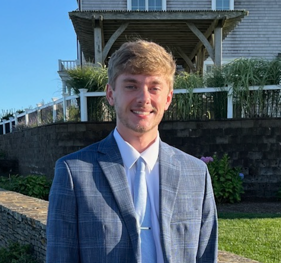

Aidan Debelius
Multimedia Journalist

Experience
Freelance Student Journalist
Campus Publications including The Diamondback and Stories Beneath the Shell
2024 - Present
Research, report, and write news/feature stories in the College Park area.
Journalism Intern
5wins
Sept. 2026 - Present
Research, report, and write stories focused on womens professional and collegiate sports.
Education
- Bachelor of Arts, Journalism, University of Maryland, Dec. 2026 expected graduation date
- Associate of Arts, Journalism and Communications, Carroll Community College, 2024
Skills
- AP Style writing and editing
- Photo editing with Adobe Photoshop
- Video editing with Adobe Premiere Pro
- Proficient with video/audio equipment